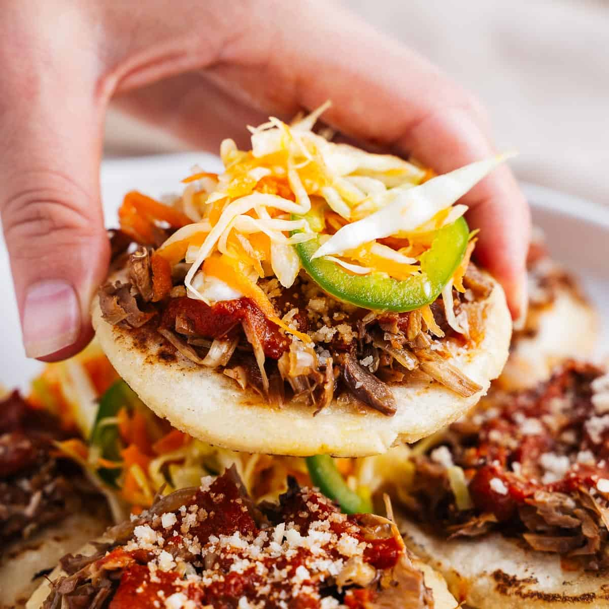
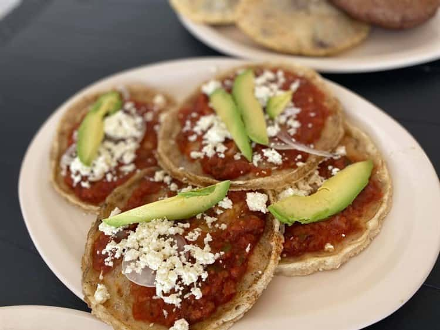

"la tostada", el nombre que reciben varios platos en México que incluyen una tortilla tostada como
base
principal de su preparación.El nombre suele referirse a una tortilla plana que se fríe o tuesta,
pero también puede referirse a cualquier plato que utilice una tostada como base. Se puede
consumirse sola o utilizarse como base de otros alimentos. Normalmente se utilizan tortillas de maíz
para las tostadas, aunque también se pueden encontrar tostadas de trigo u otros ingredientes.
Garnachas

Las garnachas son un plato de origen mexicano, consisten en una tortilla de maíz gruesa con el borde
levantado, que se fríe y generalmente se acompaña con algún tipo de salsa con frijoles y cebolla,
pueden llevar algún alimento base.
El término garnacha, se utiliza para denominar a la comida que se vende en las calles y que
generalmente va frita o que es pasada por aceite caliente. Cambian mucho dependiendo la región.
Empanadas
La empanada es una masa rellena con carnes, verduras o frutas cocida al horno o frita en aceite o
grasa. Su nombre proviene del castellano empanar, cuya primera acepción es encerrar algo en masa o
pan para cocerlo en el horno. Su origen se remonta a la costumbre de rellenar rebanadas de pan
con viandas o vegetales, que los pastores y viajeros llevaban para consumirlos en el campo. Con el
tiempo, se acabó cociendo la masa de pan junto con su relleno y, más tarde, se elaboraron otras
masas para envolver el relleno.
Gorditas

Las picadas veracruzanas son conocidas en diversas partes de la República como sopes o pellizcadas,
ya que la tortilla de maíz es adornada con unos toques a su alrededor.
Sin embargo, su creación data de la época prehispánica, donde nuestros ancestros molían el maíz en
un petate hasta crear una forma redonda, haciendo alusión a una tortilla, que en náhuatl es llamada
tlaxcilis.
Flautas
La palabra «flauta» se refiere a la forma alargada y cilíndrica de las tortillas enrolladas, similar
a la forma de una flauta. Es un platillo popular en México y se puede encontrar en restaurantes,
puestos callejeros y hogares en todo el país.
En Mexico este tipo de flautas normalmente se acompañan de lechuga, crema, queso y una salsa de
tomate ligera, aunque son muy versátiles y se pueden servir con otros acompañamientos como
guacamole, pico de gallo y cebollas en vinagre.
¿Quién es ADavidOli?
@ADavidOli
soy egresado del ITSX
cocina Mexicana
apuntate para conocer nuestros platillos
Acepto la politica de Privacidad
Podemos recopilar información personal identificable de los usuarios de diversas maneras,
incluyendo, pero no limitado a, cuando los usuarios visitan nuestro sitio, se registran en el
sitio, realizan un pedido, completan un formulario, responden a una encuesta y en relación con
otras actividades, servicios, características o recursos que ponemos a disposición en nuestro
Sitio web. Se puede pedir a los usuarios, según corresponda, nombre, dirección de correo
electrónico, dirección postal, número de teléfono, información de tarjeta de crédito. Los
usuarios pueden, sin embargo, visitar nuestro Sitio web de forma anónima. Recopilaremos
información personal identificable de los usuarios solo si nos envían voluntariamente esa
información. Los usuarios siempre pueden negarse a proporcionar información de identificación
personal, excepto que esto puede evitar que participen en ciertas actividades relacionadas con
el Sitio web.
Adoptamos prácticas de recolección de datos, almacenamiento y procesamiento apropiadas y medidas
de seguridad para proteger contra el acceso no autorizado, alteración, divulgación o destrucción
de tu información personal, nombre de usuario, contraseña, información de transacciones y datos
almacenados en nuestro Sitio web.